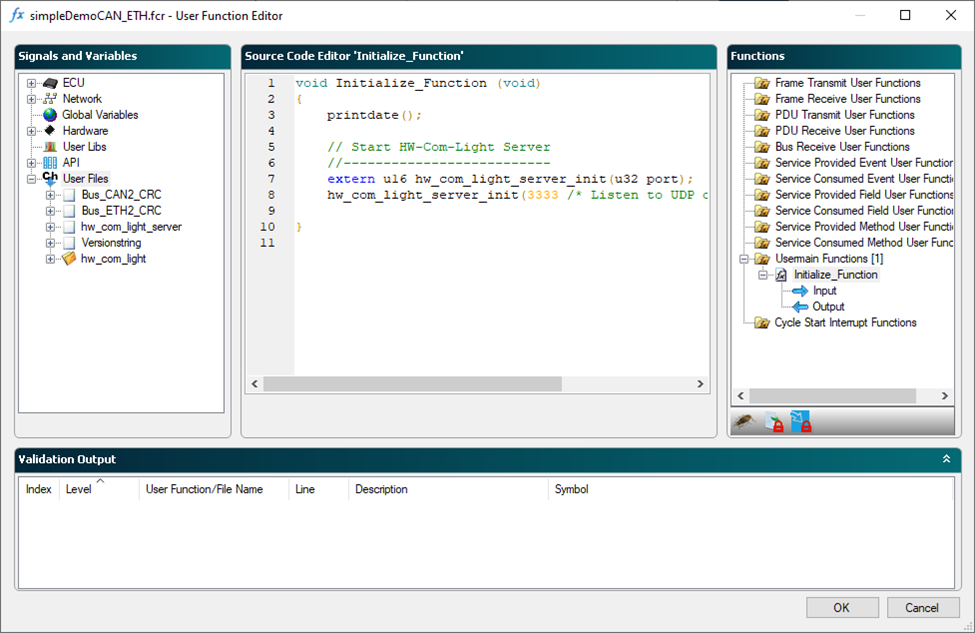
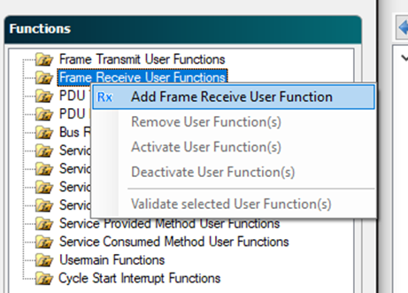
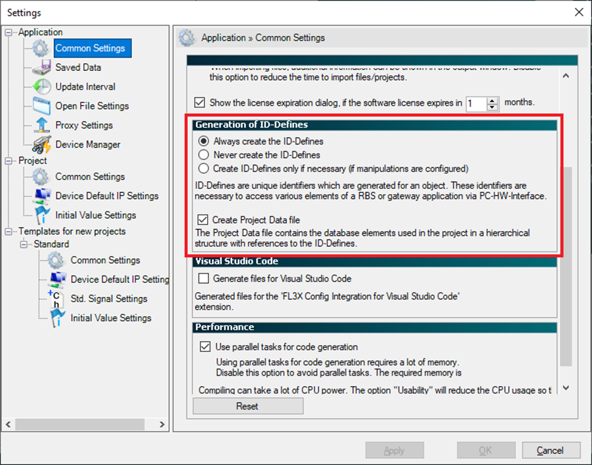

IO723 FL3X Config Usage Notes
IO723 FL3X Config Usage Notes — Usage information about the I/O module
RBS Configuration Workflow
The following steps must be executed in the FL3X Config software:
Create new Project
Select Hardware (PCIe3) and FPGA image (0xE0: 2x CAN & 2x 100BaseT1 or 0xE4: 2x 100BaseT1 & 2x 1000BaseT1)
Configure HwComLight Server

Add database and link to port
Select real and simulated ECUs
Add frames to receive (Frame Receive User Function)

Configure build options (project settings)

Build project
Execute the following steps in your Simulink® model:
Link the RBS project to the IO723 in the corresponding setup block
Select and map the signals and services for reading and writing
![[Note]](images/note.png) | Note |
|---|---|
The documentation related to the FL3X config software can be found in the respective installation folder. The software can be downloaded here: FL3X Config |